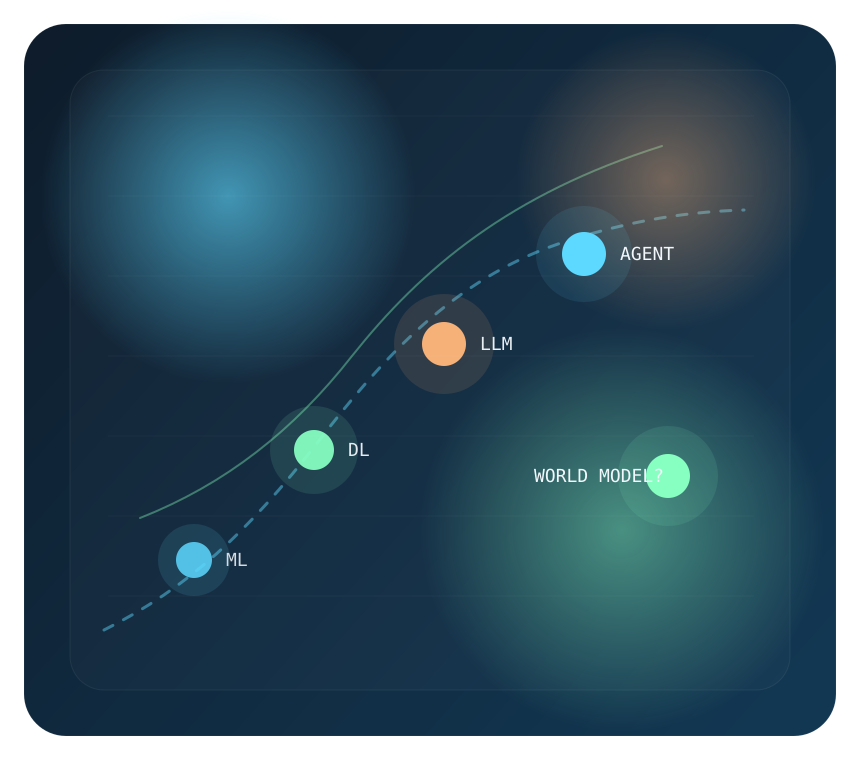
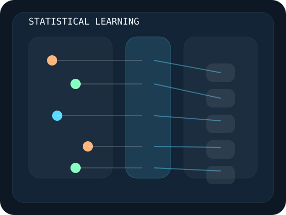
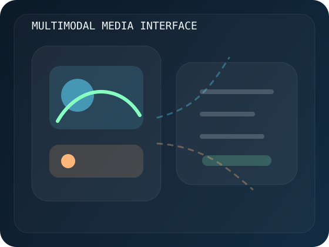
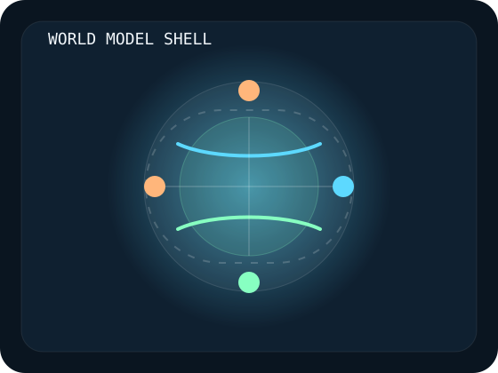
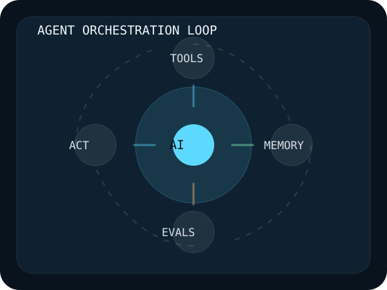

A redesigned map of AI, beyond hype cycles
How AI learned to predict, perceive, generate, act, and maybe simulate worlds.
This version is built as a richer sci-tech editorial site: tighter typography, original illustrations, interactive history modules, stronger source links, and new frontier chapters on Seedance, Happy Oyster, OpenClaw, harness engineering, and the world model bet.

Core transition
Model quality is no longer the whole story.
The outer system layer now decides whether AI feels toy-like or product-grade.
New layer
Interfaces are becoming worlds.
Seedance and Happy Oyster both point to a future where AI is not only text, but dynamic media and interactive space.
1956 Dartmouth
1958 Perceptron
1986 Backprop
2012 AlexNet
2017 Transformer
2020 GPT-3
2024 Agent wave
2025-2026 Seedance / OpenClaw / Harness / Happy Oyster
Next: world models
AI history
A better timeline, with stronger sources and less hand-wavy storytelling
Instead of one giant paragraph, the history is split into milestone states. Click across the timeline to see the capability shift, why it mattered, and which papers, official pages, or talks best represent the moment.

Era
Loading timeline item
What changed
Why it matters
Frontier systems
Where the website gets current: OpenClaw, Seedance, Happy Oyster, harnesses, and world models
These are not all the same thing. Some are products. Some are infrastructure ideas. Some are research bets. But together they show how AI is moving from chat interfaces toward richer media, longer-running systems, and more world-like interaction.

Topic
Loading topic
Interpretation
Why now
Curated library
Papers, blogs, official docs, and videos in one living shelf
Filter the collection by how you want to learn. The goal here is not quantity. It is a more credible and more useful shortlist.
Watch
A more visual learning layer
This wall leans into strong video explainers and talks. It exists because AI is easier to grasp when some of the abstract shifts are seen, not only read.
Future
What happens if the next interface is not text, but simulation?
The strongest future branch in this story is world modeling: AI systems that learn latent structure, preview consequences, and reason over possible futures before acting in the real one.

World models could shift AI from reactive generation to internal planning.
This is why the bridge from generative AI to embodied and agentic AI may run through simulation.

Harnesses, evaluations, and recovery systems will become default product architecture.
Control surfaces will matter just as much as model intelligence.
Interfaces are becoming audiovisual, spatial, and world-like.
Seedance and Happy Oyster fit here as signs of interface expansion, not just model scaling.